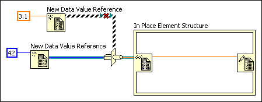
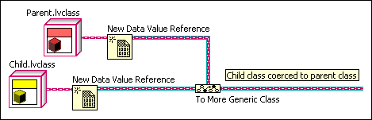
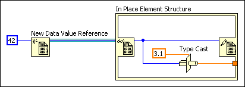

You cannot use the Type Cast function to cast from one type of data value reference to another type of data value reference. The data determines the type of the data value reference, and you should not change that type.
To correct this error, cast class references using the To More Specific Class or To More Generic Class functions.
To access the data as a different type, use the Data Value Reference Read / Write Element border node on the In Place Element structure and type cast the data inside the structure.
